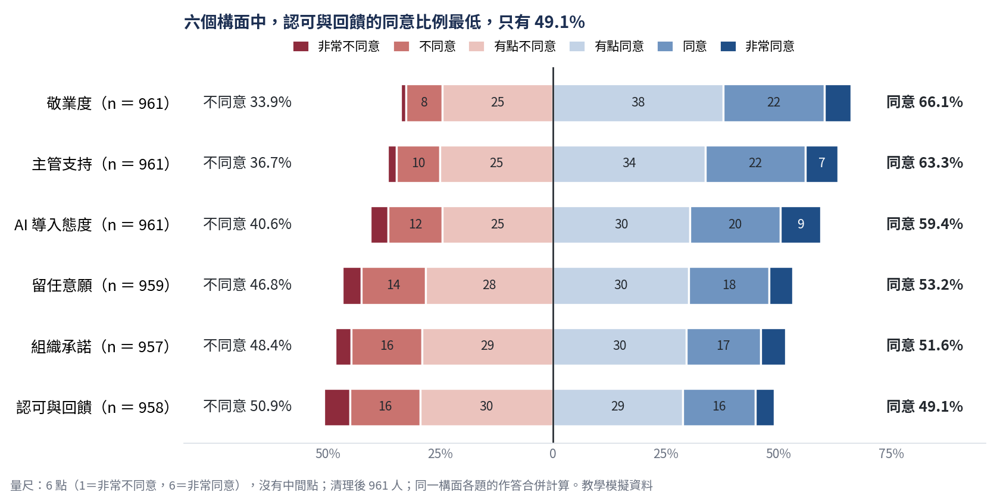
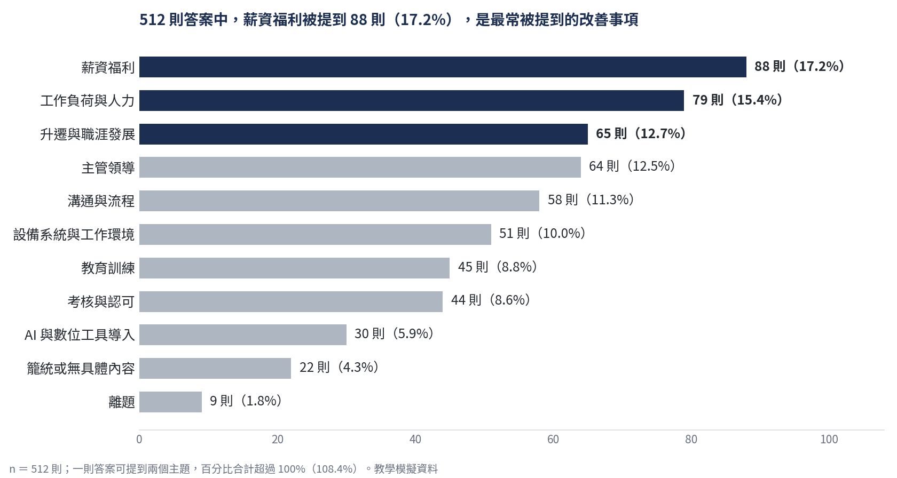
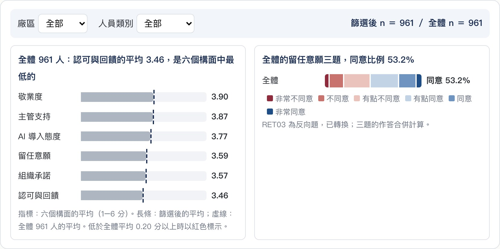
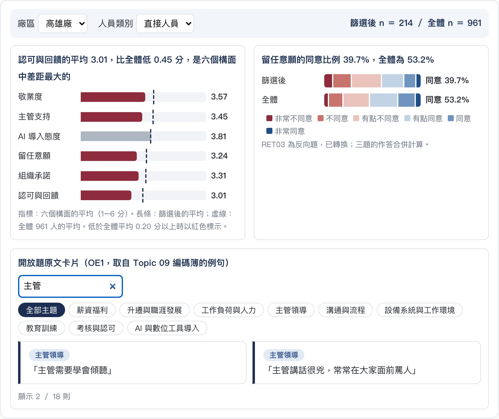

資料視覺化
調查報告的圖表與敘事
案例：把 Topic 07 至 Topic 09 的數字畫成報告用的圖
清理後 961 人、五個構面的 β、512 則開放題
人資專員交出 20 頁的表格，結論在最後一頁
人資長只有十分鐘，第一頁要放什麼
本週把數字整理成圖，並把報告改成先寫結論
本週流程
Topic 07 至 Topic 09 已經算出的數字
| 來源 | 結果 | 本週畫成 |
|---|---|---|
| Topic 07 清理 | 原始 1,000 人，清理後 961 人 | 樣本輪廓 |
| Topic 07 比較 | 年資與留任意願：F ＝ 14.69，η² ＝ .058 | 單位比較圖與基準線 |
| Topic 08 迴歸 | 留任意願模型：n ＝ 952，R² ＝ .389 | 優先改善矩陣 |
| Topic 09 開放題 | OE1 有內容的答案 512 則，11 個主題 | 主題次數橫條圖與引述 |
| 29 題李克特題 | 6 點量表，沒有中間點 | 作答分布圖 |
結論先行的報告動線
Conclusion-First Report Structure
- Minto, B. (2009). The pyramid principle: Logic in writing and thinking (3rd ed.). Pearson Education.
- Knaflic, C. N. (2015). Storytelling with data: A data visualization guide for business professionals. Wiley.
- Google Cloud. (n.d.). The art of telling stories with data: Bring clarity, simplicity, and flow to your visualizations (and dashboards) [E-book]. Looker. https://cloud.google.com/resources/looker-data-visualization-ebook
讀者分析：不同讀者的決定與閱讀方式
| 讀者 | 要做的決定 | 先看的段落 | 詳細程度 |
|---|---|---|---|
| 高階主管 | 新進三年內的留任是否列為重點 | 摘要 | 一頁，每項發現一個數字 |
| 部門主管 | 本單位的新進同仁先處理什麼 | 本單位的比較圖 | 與全公司的差距、n |
| 人資 | 追蹤哪些年資組 | 全文與附錄 | 完整表格與效果量 |
動手前先確定：讀者是誰、已有哪些背景資訊、會怎麼使用這份資訊
報告是查閱型，讀一次、供決策；儀表板是作業型，反覆查看
調查報告的動線
| 段落 | 內容 | 回答讀者的問題 |
|---|---|---|
| 一、摘要 | 3 到 5 項重點發現，每項一句話加一個數字 | 最重要的結果是什麼 |
| 二、樣本輪廓 | 原始人數、有效人數、各群組人數 | 結果代表誰的意見 |
| 三、主題章節 | 每節一個觀點型標題、一張圖、兩三句說明 | 每項發現的依據 |
| 結尾 | 資料限制與建議的下一步 | 結果可以用到什麼程度 |
| 附錄 | 清理規則、完整表格、方法 | 數字怎麼算出來的 |
分析的順序是資料、方法、結果、結論；報告的順序相反
方法沒有省略，移到後面供查證
重點發現的寫法：一句話加一個數字
| 不容易讀的寫法 | 一句話加一個數字 |
|---|---|
| 年資 ANOVA 達顯著，F(4, 954) ＝ 14.69，p < .001 | 年資 1–3 年的留任意願平均 3.18，是五個年資組中最低的 |
| 主管支持構面平均數為 3.87，標準差 0.98 | 主管支持各題有 63.3% 的作答為同意 |
| 開放題經編碼後共分為七個主題 | 60 則被肯定的經驗中，9 則表示沒有被肯定過 |
統計量放在正文與附錄；摘要只留讀者記得住的那一個數字
重點發現指出對象，例如哪個年資組
只寫全公司平均時，讀者無法據以行動
樣本輪廓：誰回答了問卷
| 項目 | 內容 |
|---|---|
| 原始與有效人數 | 1,000 人；刪除直線作答 20 人、隨機亂填 19 人後，有效 961 人 |
| 人員類別 | 直接人員 537 人（55.9%）、間接人員 424 人（44.1%） |
| 職級 | 基層員工 743 人（77.3%）、基層主管 161 人（16.8%）、中階主管 57 人（5.9%） |
| 各題的 n | 因遺漏值而略有不同；圖上標示該題實際有分數的人數 |
樣本輪廓放在摘要之後、各主題之前
真實調查另外列出回收率，並與全公司的人員結構比較
修改前台南廠各部門人數的圓餅圖
- 12 個扇形要靠角度與面積比較
- 人數相近的扇形分不出大小
- 12 種顏色要對照圖例
- 沒有人數與百分比
修改後台南廠 334 人中，生產部 108 人最多，占 32.3%
- 標題改寫成發現
- 改為依人數排序的橫條圖
- 直接標出人數與百分比
- 只有人數最多的部門用強調色
- 類別超過五個時不用圓餅圖
修改前樣本說明的文字敘述
高雄廠問卷回收 388 份，刪除直線作答 7 人、隨機亂填 7 人後，有效樣本 374 人；其中開放題有內容的答案 219 則。
- 讀者要自己心算每一步剩下多少人
- 看不出哪一步減少最多
修改後高雄廠回收 388 份，有效樣本 374 人；開放題有內容的答案 219 則
- 標題改寫成發現
- 累計的人數由 0 畫起，排除的人數接在前一根的頂端往下畫
- 每一根直接標出人數
觀點型標題的寫法
| 只寫主題的標題 | 觀點型標題 |
|---|---|
| 年資與留任意願 | 年資 1–3 年的留任意願平均 3.18，低於全公司的 3.59 |
| 主管支持各題分布 | 主管支持四題的同意比例都在六成以上，最高 65.1% |
| OE2 開放題整理 | 60 則被肯定的經驗中，團隊成果與主管肯定各 11 則，並列最多 |
一句話、20 到 40 個字、一到兩個數字；不寫原因的推測
把各圖的標題依序讀一遍，就是一份摘要
限制與下一步的寫法
| 部分 | 寫什麼 | 以年資 1–3 年的結果為例 |
|---|---|---|
| 資料限制 | 單一時點、自陳 相關不等於因果、小群組 | 年資與留任意願是關聯 一次調查看不出同一群人的變化 |
| 建議的下一步 | 誰、做什麼、何時檢視 | 人資與各廠主管訪談年資 1–3 年的同仁 半年後再看這一組的平均 |
| 預想讀者的問題 | 先準備答案；答不了的寫進限制 | 差距算大嗎：η² ＝ .058，接近中等 代表多少人：193 人 做了就會改善嗎：需要追蹤才能確認 |
限制讓讀者知道結論可以用到什麼程度；下一步把發現接到行動
與個人分析作業六章的對應
| 本週的做法 | 個人作業的位置 |
|---|---|
| 重點發現 | 第六章 6.1 主要結論：結論在最前面，3 到 5 項，對應前面章節的數字 |
| 樣本輪廓 | 第一章：原始人數、各步驟刪除人數、清理後人數 |
| 觀點型標題 | 第三至五章的圖表標題 |
| 圖表 | 不是新增的必交項目；正文 12 頁以內，3 到 4 張圖為宜 |
李克特題的作答分布圖
Stacked Bars for Likert Items
- Heiberger, R. M., & Robbins, N. B. (2014). Design of diverging stacked bar charts for Likert scales and other applications. Journal of Statistical Software, 57(5), 1–32. https://doi.org/10.18637/jss.v057.i05
平均數與作答分布
主管支持的構面平均
適合檢定與迴歸
讀者不易體會 3.87 分的意思
主管支持各題選 4、5、6 分的比例
不同意為 36.7%
讀者可以直接理解
作答分布圖畫出每個選項的百分比
同一個平均可以來自很不一樣的分布
修改前每個選項一根長條
修改後主管支持四題的同意比例都在六成以上，最高 65.1%
6 點量表的配色與中央線
| 項目 | 做法 |
|---|---|
| 中央線 | 在 3 分與 4 分之間；左側三段不同意，右側三段同意 |
| 雙色漸層 | 兩側各一個色系，越靠近中央越淺、越往兩端越深 |
| 沒有中間的類別 | 課程問卷沒有「普通」；圖上的類別與問卷選項一致 |
| 顏色的選擇 | 紅與藍可分辨；紅配綠對色覺辨識障礙者容易混淆 |
| 反向題 | 先以 7 減原始分數轉換，圖上註明「反向題，已轉換」 |
5 點或 7 點量表才有中間選項；AI 預設常以 5 點為準，提示詞要寫明「6 點、沒有中間點」
修改前高雄廠各題同意比例的直條圖
修改後高雄廠 29 題中同意比例最高 68.7%、最低 25.5%，相差 43.2 個百分點
- 標題改寫成發現
- 只列最高與最低各五題
- 題目文字完整寫出
- 依同意比例排序
作答分布圖的提示詞
- 每個構面把各題的作答合併，算出 1 到 6 分各占多少百分比
- 6 點、沒有中間點：1–3 分在中央線左側，4–6 分在右側
- 雙色漸層，越靠近中央越淺；不要用彩虹色
- 依同意比例排序；兩側標出百分比，構面名稱後標出 n
- 存成 PNG，並用表格列出畫圖用的數字；中文變方框時改用英文標籤
第 1 輪的參考圖：六個構面的作答分布

- 最高：敬業度 66.1%為什麼：與 AI 列出的表格核對
- 最低：認可與回饋 49.1%為什麼：不同意的比例超過一半
- 中央線左右各三段為什麼：出現灰色的中間段就重畫
- 每條橫條都有 n為什麼：各構面的有效人數略有不同
單位比較與基準線
Group Comparisons Against a Benchmark
- Cleveland, W. S., & McGill, R. (1984). Graphical perception: Theory, experimentation, and application to the development of graphical methods. Journal of the American Statistical Association, 79(387), 531–554. https://doi.org/10.1080/01621459.1984.10478080
- Knaflic, C. N. (2015). Storytelling with data: A data visualization guide for business professionals. Wiley.
修改前各年資留任意願
- 數值軸從 3.0 開始，10年以上（3.80）的長條高度約為 1-3年（3.18）的 4.4 倍，實際只相差 0.62 分
- 沒有 n、沒有基準、沒有數值
修改後年資 1–3 年的留任意願平均 3.18，低於全公司的 3.59
單位比較圖的修改項目
| 項目 | 做法 | 原因 |
|---|---|---|
| 數值軸 | 量表的完整範圍 1 到 6 | 長條的長度代表數值 |
| 排序 | 依數值排序；年資、職級維持原順序 | 讀者一眼找到最高與最低 |
| 數值標籤 | 平均直接標在長條上 | 不必對照座標軸 |
| n | 寫在群組名稱旁邊 | 人數少的平均不穩定 |
| 基準線 | 全公司平均畫成參考線並寫出數值 | 比較需要基準 |
繪圖套件預設會自動縮放數值軸，AI 畫的圖也會；提示詞要寫明範圍
未滿 5 人群組的處理
台中廠法務智財部：4 人
高雄廠永續發展室：3 人
不畫出長條
圖下方註明「人數未滿 5 人，不單獨呈現」
資料仍計入全公司平均
三四個人的平均不穩定，主管也可能推知個別員工的回答
達到 5 人但人數仍少的群組照常呈現、標出 n，解讀時保守
修改前高雄廠品保部與全公司的雷達圖
- 面積隨構面的排列順序改變
- 相鄰構面的連線沒有意義
- 看不出哪個構面差最多
- 沒有數值
修改後高雄廠品保部的主管支持同意比例 30.6%，比全公司低 32.7 個百分點
- 標題改寫成發現
- 每個構面一條橫條，直線記號為全公司的同意比例
- 依差距排序，右側寫出差距
修改前三個廠區三個部門的群組長條圖
修改後生產部與品保部只在高雄廠明顯偏低，主管支持低 0.72 與 0.85 分
| 廠區與部門 | n | 敬業度 | 主管支持 | 認可與回饋 | 組織承諾 | 留任意願 |
|---|---|---|---|---|---|---|
| 全公司平均 | 3.90 | 3.87 | 3.46 | 3.57 | 3.59 | |
| 高雄廠 工程部 | 34 | 4.16 | 4.12 | 3.80 | 3.64 | 3.69 |
| 台中廠 生產部 | 76 | 4.10 | 4.16 | 3.65 | 3.62 | 3.83 |
| 台南廠 工程部 | 36 | 4.06 | 4.05 | 3.71 | 3.70 | 3.81 |
| 台南廠 生產部 | 108 | 3.93 | 4.01 | 3.65 | 3.72 | 3.66 |
| 台中廠 工程部 | 27 | 4.08 | 3.94 | 3.36 | 3.63 | 3.88 |
| 台南廠 品保部 | 35 | 4.05 | 4.02 | 3.31 | 3.59 | 3.75 |
| 台中廠 品保部 | 32 | 3.81 | 3.83 | 3.61 | 3.44 | 3.42 |
| 高雄廠 生產部 | 133 | 3.31 | 3.15 | 2.79 | 3.07 | 3.10 |
| 高雄廠 品保部 | 42 | 3.30 | 3.02 | 2.81 | 3.41 | 2.87 |
修改前年資 1–3 年與 5–10 年的並列長條圖
- 差距要目測
- 沒有排序
- 用圖例對照顏色
- 沒有數值
修改後年資 1–3 年的留任意願同意比例比 5–10 年低 20.4 個百分點，差距最大
- 標題改寫成發現
- 實心點為年資 1–3 年，空心點為 5–10 年
- 依差距排序
修改前兩個年度的並列長條圖（去年為示意資料）
- 要逐對比較高度才知道升降
- 變化最大的構面不突出
- 沒有數值
修改後示意：組織承諾的同意比例由 64.0% 降為 51.6%，降幅最大
- 標題改寫成發現
- 適用於兩個時間點的比較
- 類別以十個以內為宜
- 線的斜率表示變化
- 兩端直接標出數值
- 兩次的題目與量尺要相同
修改前34 個單位留任意願的排序直條圖
修改後34 個單位中留任意願最低的都在高雄廠：品保部 2.87、生產部 3.10，以及只有 7 人的法務智財部 2.55
單位比較圖的提示詞
- 每個部門計算人數與平均；未滿 5 人的部門不畫出，在圖下方註明
- 依平均由高到低排序；標出平均與 n
- 加一條參考線，標示全公司的 SUP 平均與數值
- 數值軸從 1 畫到 6，不要截斷；低於全公司平均的部門用同一種顏色
- 另外回報生產部與品保部和其他單位的差距、p 值與 Cohen’s d
第 2 輪的參考圖：高雄廠各部門的主管支持

- 參考線 3.87為什麼：全公司平均，不是高雄廠平均
- 品保部 3.02、生產部 3.15為什麼：平均最低的兩個部門
- 永續發展室沒有畫出為什麼：只有 3 人
- 差距 −0.92，d ＝ −1.00為什麼：差距與效果量一起寫
優先改善矩陣的畫法
Drawing the Importance–Performance Matrix
- Martilla, J. A., & James, J. C. (1977). Importance-performance analysis. Journal of Marketing, 41(1), 77–79. https://doi.org/10.1177/002224297704100112
修改前沒有分隔線與名稱的散布圖
- 沒有分隔線與象限名稱
- 點只用顏色區分
- 圖例是變項代碼
- 兩軸自動縮放
- 沒有 n 與註記
修改後組織承諾的重要性並列最高（β ＝ .285），平均 3.57 低於分隔線
- 標題改寫成發現
- 點旁直接寫中文名稱
- 四個象限寫出名稱
- 分隔線標出數值
- 兩軸寫出名稱與單位
- 部分範圍在圖下註明
- 註明 n 與「β 為關聯」
矩陣圖常見的問題
| 問題 | 修改 |
|---|---|
| 點旁邊只寫變項代碼 | 改成中文構面名稱 |
| 用圖例對照顏色 | 名稱直接寫在點旁邊 |
| 移動分隔線來改變象限 | 分隔線依事先定好的規則，沒有構面落入就如實呈現 |
散布圖用位置表示數值，可以只畫資料所在的範圍
長條圖用長度表示數值，不可截斷
修改前各單位敬業度與留任意願的散布圖
- 每個點一樣大，看不出人數
- 10 種顏色要對照圖例
- 沒有全公司平均的參考線
修改後高雄廠品保部與生產部的敬業度與留任意願都低於全公司平均，合計 175 人
- 標題改寫成發現
- 氣泡面積為人數
- 虛線為全公司平均
- 只標註要談的單位
- 點是單位，不是構面
修改前迴歸結果的表格
| 構面 | 標準化 β | 平均 |
|---|---|---|
| 敬業度 | .285 | 3.90 |
| 主管支持 | .137 | 3.87 |
| 認可與回饋 | .109 | 3.46 |
| 組織承諾 | .285 | 3.57 |
| AI 導入態度 | .000 | 3.77 |
- 讀者要自己比較 β 的大小
- 看不出哪個構面要優先處理
修改後組織承諾與留任意願的關聯並列最強（β ＝ .285），平均 3.57 低於分隔線
優先改善矩陣的提示詞
- 以留任意願為依變項，五個構面同時放入多元迴歸，回報 n 與 R²
- 橫軸為重要性（β），縱軸為表現（構面平均）
- 以五個構面 β 的平均與構面平均的平均畫分隔線，標示四個象限
- 每個點旁邊直接寫中文構面名稱，不用圖例
- 圖下方註明 n，以及「β 為關聯，不代表因果」
開放題與複選題的圖
Theme Frequencies, Verbatim Quotes and Multiple-Response Items
- Knaflic, C. N. (2015). Storytelling with data: A data visualization guide for business professionals. Wiley.
修改前被肯定的經驗分類
- 七個扇形大小接近，無法比較
- 只有圖例，沒有則數與 n
- 顏色沒有意義
修改後60 則被肯定的經驗：團隊成果與主管肯定各 11 則，並列最多
原文引述的挑選與去識別化
| 項目 | 做法 |
|---|---|
| 數量 | 每個主要的主題兩三則，放在圖的旁邊或下方 |
| 挑選 | 只談一件事、30 字以內、能代表多數答案；不挑最極端的一則 |
| 去識別化 | 刪除或改寫人名、職稱加姓氏、單位名稱、具體事件；註明「經改寫」 |
| 不標單位 | 引述不標示填答者的部門與職級 |
| 核對 | AI 給的引述回到 Excel 搜尋，確認是資料中的原文 |
文字雲只用於探索；報告中的排序來自編碼後的主題次數（Topic 09）
示意示意：主管口頭轉達有 71.3% 的填答者選擇，是最多人使用的管道
- 依百分比排序的橫條圖
- 不用圓餅圖：合計不是 100%
- 圖上註明可複選與填答人數
- 開放題的多重提及相同
主題次數圖與引述的提示詞
- 畫橫條圖：依則數排序，標出則數與百分比，分母為 512 則
- 圖下方註明「一則答案可提到兩個主題，百分比合計超過 100%」
- 不要畫圓餅圖，也不要畫文字雲
- 為則數最多的三個主題各挑兩則原文引述：30 字以內、只談一件事
- 引述不含人名、單位名稱或可辨識的事件；改寫時註明「經改寫」
第 4 輪的參考圖：OE1 各主題被提到的則數

- 薪資福利 88 則（17.2%）為什麼：分母是 512 則
- 百分比合計 108.4%為什麼：555 次提及 ÷ 512 則
- 合計剛好 100% 時要求重算為什麼：分母誤用了提及次數
- 引述回到 Excel 搜尋為什麼：AI 可能自行編寫引述
避免誤讀的圖表檢核
Guarding Against Misreading
- Franconeri, S. L., Padilla, L. M., Shah, P., Zacks, J. M., & Hullman, J. (2021). The science of visual data communication: What works. Psychological Science in the Public Interest, 22(3), 110–161. https://doi.org/10.1177/15291006211051956
- Wasserstein, R. L., & Lazar, N. A. (2016). The ASA statement on p-values: Context, process, and purpose. The American Statistician, 70(2), 129–133. https://doi.org/10.1080/00031305.2016.1154108
- Cohen, J. (1988). Statistical power analysis for the behavioral sciences (2nd ed.). Lawrence Erlbaum Associates.
效果量與 p 值的並列
| 比較 | 結果 | p | 效果量 | 大小 |
|---|---|---|---|---|
| 主管職與基層員工的組織承諾 | 3.72 與 3.52 | .012 | d ＝ .19 | 小 |
| 五個年資組的留任意願 | 3.18 至 3.80 | < .001 | η² ＝ .058 | 接近中等 |
| 敬業度與 AI 導入態度的相關 | n ＝ 961 | .023 | r ＝ .07 | 很小 |
p 值回答「是否可能只是抽樣誤差」，效果量回答「差多少」
星號可以使用，要註明意義，並且不取代效果量
相關與因果的用語
| 避免的寫法 | 建議的寫法 |
|---|---|
| 敬業度影響留任意願 | 敬業度與留任意願的關聯並列最強（β ＝ .285） |
| 年資 1–3 年導致留任意願下降 | 年資 1–3 年的留任意願在五組中最低 |
| 加強主管訓練可以提高留任率 | 主管支持與留任意願有關聯；成效需要後續追蹤確認 |
同一個時間點的調查只能說明關聯
發現與建議分開寫：發現寫資料顯示的結果，建議寫值得嘗試的行動
修改前每個構面一種顏色的長條圖
修改後生產部與品保部的認可與回饋平均 2.80，五個構面中最低
- 標題改寫成發現
- 全部灰色，只有一項用強調色
- 數值用長條比較
- 顏色的判讀準確度最低
- 不只靠顏色：名稱加粗並加註解
- 五秒測試：看五秒說得出重點
圖上的文字元素
| 元素 | 寫什麼 | 前一頁的圖 |
|---|---|---|
| ① 標題 | 這張圖的發現，一句話 | 認可與回饋平均 2.80，五個構面中最低 |
| ② 副標 | 資料範圍、n、量尺 | 生產部與品保部 n ＝ 175；6 點量表 |
| ③ 直接標籤 | 名稱與數值標在長條或線旁，少用圖例 | 構面名稱在左，平均在長條末端 |
| ④ 註解 | 在圖上指出要看的地方，一句話 | 比其他單位低 0.81 分 |
| ⑤ 重點框 | 這張圖對讀者的意義，一句話 | 座談先了解認可與回饋的做法 |
| ⑥ 來源與註記 | 來源、算法、未呈現的群組 | 課堂練習資料；其他單位的定義 |
各個元素各寫一次，不重複同一句話
圖例只在無法直接標示時使用，例如李克特圖的六個選項
圖與表的選擇
| 讀者要做的事 | 形式 | 例子 |
|---|---|---|
| 逐筆查看精確的數值，或查某一個項目 | 表格 | 五個年資組的 n、平均與標準差 |
| 看出型態、比較高低或趨勢 | 圖 | 各年資組與全公司平均的比較 |
| 兩者都需要 | 圖與附表 | 圖放正文，完整表格放附錄 |
數字少、讀者需要精確數值時，表格就足夠
放圖的理由是讓讀者更快看出比較的結果
每張圖完成後的檢核項目
| 項目 | 確認 |
|---|---|
| 數值軸 | 長條圖從 0 或量表最小值開始；只畫部分範圍的圖有註明 |
| 排序 | 依數值排序；有固定順序的類別除外 |
| 數值標籤 | 重要的數值直接標在圖上 |
| n | 每張圖都看得到；未滿 5 人的群組沒有畫出 |
| 配色 | 李克特題為雙色漸層，沒有中間的灰色類別 |
| 文字 | 沒有英文變項代碼；類別用中文名稱 |
| 強調色 | 其餘的圖全部灰色，只有要讀者先看的項目用一個強調色 |
| 註解 | 圖上有一句註解，指出要看的地方 |
圖表檢核與觀點型標題的提示詞
- 數值軸沒有截斷；排序；數值直接標在圖上
- 每張圖的 n 都看得到；未滿 5 人的群組沒有畫出
- 配色與文字：雙色漸層、沒有英文變項代碼；其餘的圖只有一個強調色，圖上有一句註解
- 把每張圖的標題改寫成一句話的發現，包含一到兩個數字，20 到 40 個字
- 不用「影響」「造成」「導致」；每張圖給兩個版本，由我選擇
實機練習
Hands-on with ChatGPT, Claude or Gemini
請 AI 畫圖的步驟
| 做什麼 | 確認 | |
|---|---|---|
| 1 | 上傳練習資料，貼第 0 輪提示詞清理 | 清理後 961 人 |
| 2 | 貼畫圖的提示詞，請 AI 存成 PNG 並列出數字 | 數字與答案相同 |
| 3 | 下載圖，依檢核項目自己看一次 | 數值軸、排序、標籤、n、配色、文字、強調色、註解 |
| 4 | 把標題改寫成發現，填進檢核表 | 標題中的數字與表格相同 |
中文變成方框時：請 AI 改用英文標籤並附對照表，或只取數字表、用 Excel 畫
課堂與作業只需要網頁版；標「進階示範」的頁面為選讀
各輪提示詞的練習流程
| 輪次 | 任務 | 每輪結束後確認 |
|---|---|---|
| 第 0 輪 | 資料準備與樣本輪廓 | 961 人；高雄廠 374 人 |
| 第 1 輪 | 李克特題的作答分布圖 | 敬業度 66.1%、認可與回饋 49.1% |
| 第 2 輪 | 單位比較圖與基準線 | 參考線 3.87；永續發展室不呈現 |
| 第 3 輪 | 優先改善矩陣 | 952 人、R² ＝ .389；組織承諾在優先改善 |
| 第 4 輪 | 開放題主題次數圖與引述 | 薪資福利 88 則（17.2%） |
| 第 5 輪 | 圖表檢核與觀點型標題 | 檢核項目；每張圖選定一個標題 |
| 第 6 輪 | 一頁摘要 | 3 到 5 項發現；每個數字找得到來源 |
一頁摘要的提示詞
- 重點發現 3 到 5 項：每項一句話，句中只放一個最重要的數字
- 樣本輪廓：原始人數、清理後人數、各廠區人數、開放題則數
- 每一項發現註明對應的圖；建議行動 2 到 3 項，各對應一項發現
- 限制：教學模擬資料、同一個時間點、相關不代表因果
- 寫完後列出摘要中每一個數字的來源
一頁檢核表的項目類型
| 項目 | 例子 | 填寫方式 |
|---|---|---|
| 數字 | 清理後人數、參考線、R²、百分比合計 | 與正確答案相同就選 ✓ |
| 圖上必須看得到 | 中央線、數值軸 1 到 6、n、分隔線 | 自己看圖逐項確認 |
| 各人不同 | 選定的標題、重點發現的項數 | 寫下自己的結果 |
檢核表只用於課堂練習；個人作業使用作業版資料，另有自我檢查表
儀表板的設計原則
| 原則 | 意思 | 示範中的做法 |
|---|---|---|
| 清楚 | 標題與指標都有定義 | 標題寫出指標與量尺；固定顯示篩選後的 n |
| 精簡 | 每個區塊對應同一個主題，其餘拿掉 | 兩張圖加原文卡片；全體平均以基準線留在圖上 |
| 動線 | 由左到右、由上到下，從總覽到細節 | 篩選器在最上方；先看六個構面，再看分布與原文 |
報告讀一次、供決策；儀表板反覆查看，用來追蹤變化
未滿 5 人不顯示結果；原文卡片不隨單位篩選
篩選器、連動的圖與全體基準

- 篩選器集中在最上方一列為什麼：選定後所有的圖一起更新
- 固定顯示篩選後與全體的 n為什麼：讀者隨時知道看的是多少人
- 虛線為全體的平均為什麼：篩選後仍保留比較的基準
- 數值軸固定 1 到 6為什麼：切換條件時長度可以互相比較
篩選後的結果與原文卡片

- 高雄廠直接人員：n ＝ 214為什麼：偏低的構面以紅色標示
- 篩選後未滿 5 人時不顯示結果為什麼：與報告的小群組規則相同
- 原文卡片附主題標籤，可搜尋為什麼：次數加引述
- 卡片不隨單位篩選為什麼：加上單位可能推知身分
本週名詞
| 名詞 | 意義 |
|---|---|
| 結論先行 | 報告先寫結論與重點發現，再寫資料與方法 |
| 觀點型標題 | 直接寫出發現的標題，包含一到兩個數字 |
| 同意比例 | 選擇 4、5、6 分的百分比 |
| 發散式堆疊橫條圖 | 以中央線分開不同意與同意兩側的堆疊橫條圖 |
| 基準線 | 標示比較基準的參考線，例如全公司平均 |
| 截斷的數值軸 | 長條圖的數值軸不從 0 或量表最小值開始 |
| 效果量 | 差距或關聯的大小，例如 d、η²、r |
課後作業
- 課堂沒做完的輪次
每一輪對照答案與參考圖 - 四張圖各選定一個觀點型標題
完成一頁摘要 - 把每一輪的結果填進一頁的檢核表
對照正確答案
個人分析作業
使用作業版資料
圖為選用，只用表格也可以
放圖以 3 到 4 張為宜
完成第六章結論與管理建議
補做前面未完成的章節
延後一週：2026/12/03 23:59 截止